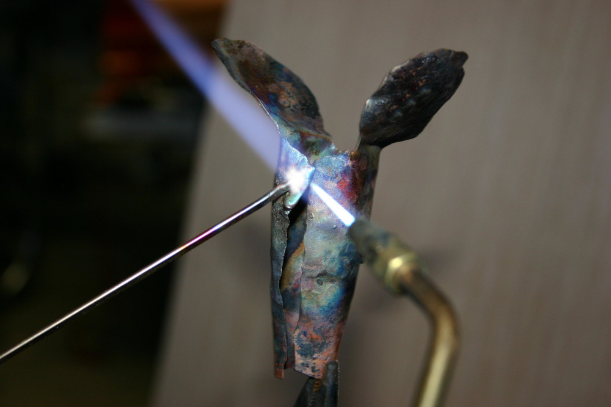

Rio Rancho, NM - Est. 2020
Providing local, uniquely designed art that perfectly complements a southwestern styled home with copper being the key design element.
How it Began
With a hobby of making home furnishings from both wood and metal for the past several decades but too busy with a day job to allow pursuit of starting a business, retirement and a move to New Mexico in 2019 provided the opportunity to seriously consider turning a hobby into a business.
But the interest in working with copper began many years earlier back in the 1960s when I lived next to a church in Wisconsin that was having a copper steeple built. The builders left pieces of scrap copper in the parking lot, which I picked up and made a few simple items.
Later, after high school, a job at a metal fabrication shop making custom industrial products fed my interest in metal work. After that, I worked in IT for a few decades from which I retired in 2019. But during that period in IT there were projects in my spare time involving the use of copper, such as this copper chimney enclosure at my previous home in 2016.
I have always enjoyed making unique projects that were not found in stores or online and knew others probably had the same desire to own something that was unique and didn't have the look of being mass-produced by someone far away who had no real connection to the final product or customer.
Workmanship
Much of the copper used is purchased as recycled material. The wood that is sometimes used in my artwork consists of locally purchased pine board. All pieces that go into making my work are cut and shaped using hand tools. The various pieces of copper are attached together using a brazing process to create a secure bond.

The coloring of the copper is achieved using combinations of flame, chemicals, or fired vitreous (glass) enamels. There will be variations in the way patinas form on the copper each time. Since all aspects of creating my work are done by hand, some slight differences in technique will occur resulting in variations of size, shape, and color among similar pieces.
Although copper itself is very durable outdoors, it is recommended that all pieces of my work should be placed in a spot that is protected from prolonged direct exposure to sun and moisture. Some patinas are prone to change color if left outdoors in an unprotected spot.